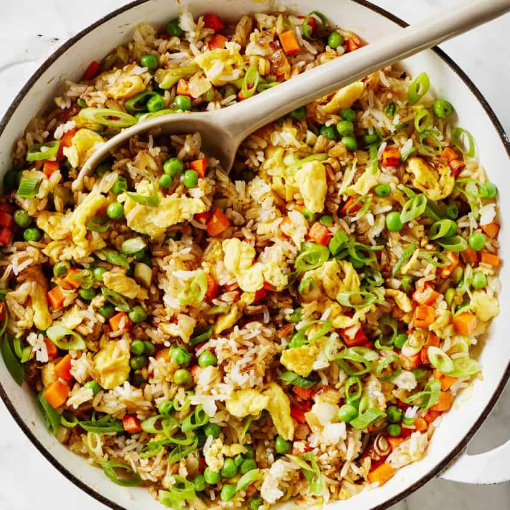

Fried Rice

What's the hype?
Got leftover rice? This easy fried rice recipe is the best way to use it up!
I mix it with veggies and eggs in this delicious Chinese-inspired dish.
What you need:
- 2 tbsp neutral oil
- 2 large eggs, beaten
- 1/2 medium white onion, chopped
- 2 medium carrots, peeled and diced
- 1 cup frozen peas
- 3 garlic cloves, chopped
- 1 tbsp fresh ginger, chopped
- 4 scallions, chopped, dark green tops reserved for garnish
- 4 cups cooked and chilled white rice
- 3 tbsp soy sauce or tamari
- 11/2 tbsp toasted sesame oil
- 2 tbsp rice vinegar
Step by step:
- Heat ½ teaspoon of the oil in a large skillet over medium heat. Add the eggs and cook, stirring often, for about 1 minute to scramble. Remove from the pan and set aside.
- Wipe out the pan and return it to medium heat. Heat another 1 tablespoon of the oil, then add the onion, carrots, and peas. Cook, stirring often, for 3 to 5 minutes, or until softened.
- Add the remaining 1 tablespoon oil to the pan along with the garlic, ginger, and white and light green parts of the scallions. Stir, then add the rice, soy sauce, and 1 tablespoon of the sesame oil. Stir to coat the rice, then press it evenly into the bottom of the pan. Cook, stirring only occasionally, for 3 to 5 minutes, allowing the rice to become lightly crisp and browned from sustained contact with the pan.
- Stir in the remaining ½ tablespoon sesame oil, the rice vinegar, and the scrambled eggs. Season to taste, garnish with the reserved scallion tops, and serve.